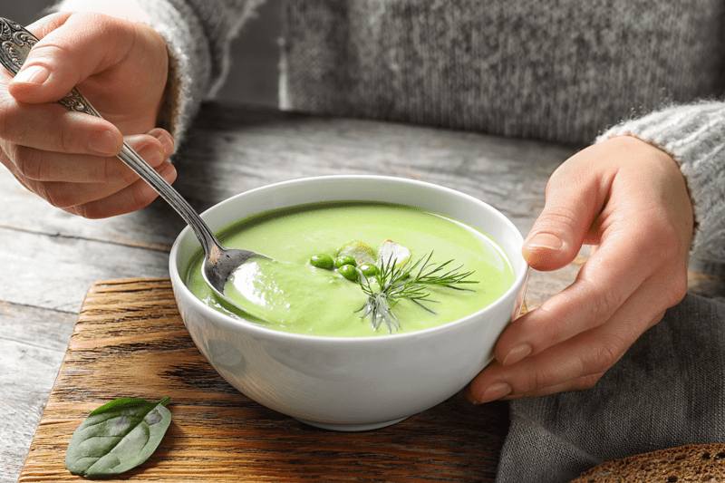
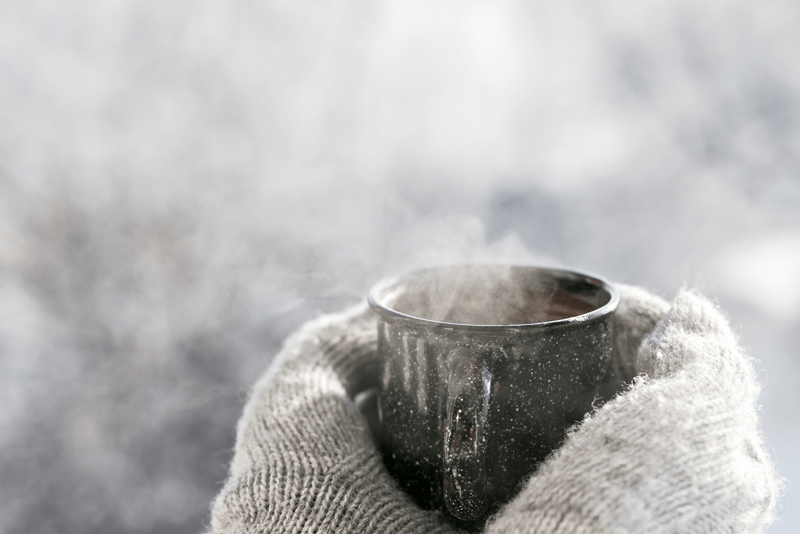
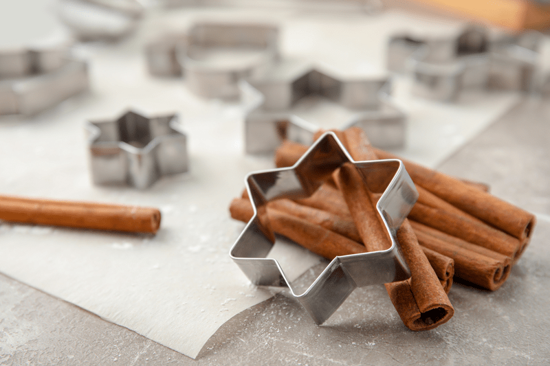

#4 – How to “Warm” up when Eating Raw
Do you eat a high-raw diet or are you possibly 100% raw? If so, you might understand what I am about to share. When I first learned about the raw food diet, I went 100% raw overnight while I was living in Alaska and of course, I started my new adventure as Fall was quickly approaching.
As I was educating myself on this journey, everyone around me was convinced that I was part alien. You see Alaskan’s hardly understood what it meant to be vegetarian, let alone vegan or raw. The only support that I had was my husband, but he didn’t join me on my bone-chilling ride. I wasn’t at all prepared with how to handle the chills that can come from eating raw foods in a cold climate nor did it even cross my mind that it might be an issue. I never gave much thought to the ramifications of not ingesting hot foods when it’s 20 degrees below zero (F).
I remember preparing my raw dinner filled with fresh veggies that just came from the fridge, piling on layers of clothing, wrapping up in a blanket (sometimes two), and snuggling down in front of the fireplace with my raw delights. I could feel the heat from the fire work its way through the blanket, penetrating warmth into my backside. I would then rotate making sure to heat all sides of my body. I was a living human rotisserie!
In between bites I could see my breath, my nose was cold, and my blanket kept getting in the way as I tried to bring forkfuls of salad to my lips. After dinner, I would jump into a hot bath and soak the frost away as I was sipping a warm tea.
Aaah, this is life! (right?) I kid you not; I was a permanent oversized goosebump for a solid year! Shoot even my goosebumps had goosebumps! Forget wearing socks to bed, mukluks and parkas became the new lingerie for me. I share much of that with great humor but in all honesty being cold became a way of life for me. As time went on and I became more and more educated about eating a high-raw food diet, I started to pick up some tricks of the trade.
But before I continue, I must start by adding that after a full year passed, I did begin to incorporate some cooked foods back into my diet. Not because of boredom or lack of willpower, my body wasn’t thriving on 100% raw. It was a hard decision because I LOVED being all raw. I loved every aspect of it, and there was also a part of me that felt that I had failed myself and others by not being able to stick to it.
The truth of it was that I could stick to it, but my body wasn’t gaining optimal health, and I ignored it for quite some time. Not smart, but I learned some valuable lessons about how to listen to my body’s needs. Life is a journey my friends, and I believe that every step within it teaches us and helps us to make better choices further on down the road. Through my 100% raw process, I learned how important it was to eat whole organic foods, how to crowd out processed foods, and how to honor myself. Truly priceless. There, now I feel comfortable in proceeding with some tips on eating raw when embracing goosebumps.

Enjoy Cooked Foods
Does that idea scare or confuse you? Nouveau Raw is a raw recipe site after all. Let me share that there is nothing wrong with the partaking of cooked, whole foods. I recommend it, especially when just starting. Here is my approach…
- Keep clear of foods that are pasteurized, homogenized, or produced with the use of synthetic pesticides, chemical fertilizers, or industrial solvents. Also, be aware of foods that have chemical food additives included. Bottom line, avoid processed foods as much as possible.
- Lightly steam veggies. If you are unable to digest a lot of raw foods, there’s a good chance that you’re not absorbing many of the nutrients in the foods that you eat.
- If you are new to eating raw, make the transition slowly. Not only will this give your body and mind time to adjust, but you can also tune in to see how your body is responding. Rushing into anything is never a good idea. Don’t get caught up in food labels, learn to eat according to YOUR body.
- Combine cooked and raw ingredients in your dishes.

Warming Tips
- A raw food diet doesn’t mean that you only have to eat cold food. You can warm food up to 115 degrees (F), and it will still be classified as living. If it is coming from the fridge, it’s possible to warm the food at higher temps (145 degrees F) for a shorter period without destroying the enzymes.
- If you don’t own a dehydrator, another way to warm soups is in a blender. This technique can take about 5 minutes. Many blenders these days have a soup button, but be watchful that it doesn’t get it too warm.
- Warm up your dishes before placing the food in them. Use a dehydrator/oven for a few minutes to warm it up.
- Eat foods at room temperature. When you want to eat food that is chilling in the fridge, take food out thirty minutes before you want to eat it and consume at room temp. You can also use a dehydrator to warm your meals.
- Run around the block, do ten push-ups, take a sauna, steam bath, whirlpool, hot bath, dance, or put on extra clothing. Do what you need to stop the shivering long enough to get the fork to your mouth without stabbing yourself!
- Drink warm herbal teas or even warm water with lemon.
- Don’t drink liquids cold. Always bring them to room temp or warmer.
- Enjoy a beautiful hot bath to warm yourself up.
- Wear warm layers and good socks to keep you warm and toasty.

Warming Spices
Add warming spices to all your foods!
- Cinnamon – Antiseptic, excellent digestive tonic and warms people who are always cold. Some kinds of cinnamon can verge on spicy, such as Vietnamese cinnamon.
- Garlic – Improves circulation, helps remedy the common cold and makes you more resistant to infection.
- Ginger – Antioxidant, improves circulation to all parts of the body.
- Cayenne – Rich in Vitamin C, helps relieve chills, coughs, and congestion. Sprinkle in between socks and shoes to keep warm feet.
- Curry powders or pastes – They get their heat from peppers.
- Coriander – From the cilantro plant, it’s warming with citrus notes.
- Cumin – It’s warm, not hot.
- Mustard powder or prepared.
- Paprika – A member of the pepper family, can be mild to hot, or smoked.
- Turmeric – Mild, warm spice often used in Indian cooking. Turmeric is rich in a considerable number of astringent tannins that help tighten tissues and absorb excess water from the body. Moreover, turmeric is high in an active compound called curcumin that is proven to normalize blood circulation and improve blood vessel health.
- Many other typical spices (cloves, allspice, fennel, etc.) can convey a subtle heat.
- Raw garlic – Be careful, it can be very “hot” when raw. It’s completely different than when cooked.
Warming Foods
- Hot peppers (hot spicy foods are stimulants which raise body temp by increasing circulation), radish sprouts, ginger, cayenne pepper, red pepper, and even wasabi.
- Increase your intake of healthy fats. Some good examples are avocados, coconut meat and oil, olives, oils, nuts, and seeds. These will give your body the essential fats it needs to keep your metabolism firing. Calorie-dense foods tend to be warming.
- Mustard greens and mustard seeds stimulate blood flow and improve circulation which creates a warming sensation in the body.
© AmieSue.com